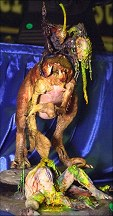
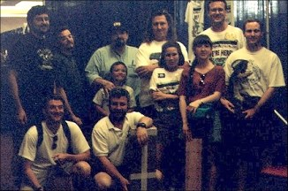

Review by:
Larry Brackney (zeiram@mail.hsonline.net)
Photos by:
Jerry Shaw (jshaw@primenet.com)
Dan Brandt (gdb6245@msu.oscs.montana.edu)
Theresa Butler
Larry Brackney(zeiram@mail.hsonline.net)
Denis Bohm (denis_bohm@fireflydesign.com)
Layout by:
Laura Ochiltree (gremlins@gremlins.com)

 Sideshow's theme for this year's MMP seemed to be celebs. Lots of 'em.
Sideshow called back last year's guest of honor, Bernie Wrightson,
supporting his new zombie kits as well as a very Lovecraftian sculpture
called "Anguish." That was just the beginning though. Horror master Clive
Barker was on hand to debut his first original figure kit, "Demon Putting
Out His Eyes." Comic, RPG, and CCG artist Tim Bradstreet was also camped
out in the sideshow booth, as was famed fantasy illustrator Kelly Freas.
Both were showcasing their licensed kits from Sideshow: Gallows and "God of
Robots," respectively. Gallows is a terrific 1:6 post-apocalypse figure,
while "God of Robots" will be VERY familiar to fans of Queen's classic
"News of the World" album. Sideshow's booth was packed with several other
recent releases, including a kit from John Landis' cult classic "Schlock."
Sideshow's theme for this year's MMP seemed to be celebs. Lots of 'em.
Sideshow called back last year's guest of honor, Bernie Wrightson,
supporting his new zombie kits as well as a very Lovecraftian sculpture
called "Anguish." That was just the beginning though. Horror master Clive
Barker was on hand to debut his first original figure kit, "Demon Putting
Out His Eyes." Comic, RPG, and CCG artist Tim Bradstreet was also camped
out in the sideshow booth, as was famed fantasy illustrator Kelly Freas.
Both were showcasing their licensed kits from Sideshow: Gallows and "God of
Robots," respectively. Gallows is a terrific 1:6 post-apocalypse figure,
while "God of Robots" will be VERY familiar to fans of Queen's classic
"News of the World" album. Sideshow's booth was packed with several other
recent releases, including a kit from John Landis' cult classic "Schlock."
The Flying Gung Brothers continued with their philosophy that BIGGER is BETTER! Their new "Ultimate Warrior" alien makes the original Stalking Xenomorph look like a pipsqueak, standing around 3 1/2 to 4 feet tall. This was a really interesting take on Giger's design, and was bargain priced for the show. My only problem would have been figuring out how to get the bloody thing home on the plane!
Viscious Kits continued their line of Henson-inspired pieces with a brand new "Aughra." They were also showing off some great Cenobite busts inspired by the uninspiring fourth Hellraiser film. I found their booth also noteworthy for offering a selection of "seconds," and other special low-cost sculptures. The little dwarves they were selling for $7 were really cool, and would be a great way to introduce a youngster to figure painting.
Spectral Motion made a splash with their brand new werewolf bust, Boris. Boris is a vicious canine-styled wolf, with sparse hair covering, so there's lots of room for unusual fleshtones, veining, and the like. The supplied teeth and tongue are cast in dental acrylic, and look fantastic. The kit also comes with a brass nameplate and real boar's whiskers for detailing. The 1:3 scale bust, sporting a fantastic Gilliland paint job, was one of the coolest debuts at the show. Judging by how fast he was flying off the shelves, I suspect that many others agreed with me!
 A contigent from Fewture Models in Japan and Washington State showed up
to unveil the first of several new Phantom Core pieces, Nina Darkness.
Oniki certainly doesn't disappoint with this piece, and those who loved his
Guillotina and Nina Gillman suit kits will want to snap this one up in a
hurry! Yasushi Nirasawa was frantically signing books, t-shirts, and kit
boxes. While it wasn't available yet, Nirasawa's first kit in quite a
while, Phancure, was on display along with the accompanying Nina kit. The
two kits should make for some excellent dioramas at next year's Spring
shows!
A contigent from Fewture Models in Japan and Washington State showed up
to unveil the first of several new Phantom Core pieces, Nina Darkness.
Oniki certainly doesn't disappoint with this piece, and those who loved his
Guillotina and Nina Gillman suit kits will want to snap this one up in a
hurry! Yasushi Nirasawa was frantically signing books, t-shirts, and kit
boxes. While it wasn't available yet, Nirasawa's first kit in quite a
while, Phancure, was on display along with the accompanying Nina kit. The
two kits should make for some excellent dioramas at next year's Spring
shows!
 Styrene Studios was showing off several new pieces, including a cool ID4
female alien, and two new Young Frankenstein pieces, Peter Boyle as the
monster and Marty Feldman as Igor. Not to be outdone, Morningstar
Creations wheeled out a fantastic Young Frankenstein diorama featuring
Boyle and Wilder, as well as a very cool Blues Brothers piece and the new
"Moon Phat" kit. (A City of Lost Children-like figure.)
Styrene Studios was showing off several new pieces, including a cool ID4
female alien, and two new Young Frankenstein pieces, Peter Boyle as the
monster and Marty Feldman as Igor. Not to be outdone, Morningstar
Creations wheeled out a fantastic Young Frankenstein diorama featuring
Boyle and Wilder, as well as a very cool Blues Brothers piece and the new
"Moon Phat" kit. (A City of Lost Children-like figure.)
John Tucky's X-O Facto table was dominated by last year's people's choice winning diorama. It was a wonder he had room for his display pieces, new line of bases, and all the Gozi kits he brought to sell! The Newtype and MiM booths and several others were also crammed to the gills w/ Kaiju toys and kits, so there was no shortage of big rubber monsters at the show.

I spent a fair amount of time and money at the Mike Burnett Productions booth! Burnett was debuting a wonderful new line of 1:2 (!) scale busts, Bruce the shark reproductions, a cool female gray alien, and a snazzy 1:5 scale Apollo astronaut. Any of these pieces were a bargain, featuring excellent sculpting and a ton of solid resin. The biggest problem I had with the booth was choosing which kits to pick up!

Matt McMullen was wowing female kit collectors with his Dancer 1 and 2 pieces. Right across the way, and not to be outdone, Gordy was doing brisk business with his new Mike James kit for Kitbuilders. Not enough for you female kit junkies? Then you could always head down the aisle a bit to see what was Sitting Pretty at the Modeler's Resource table!
Avatar Creations was giving collectors a sneak peak at some of the big things they have planned for the months ahead. A fantastically busy Simon Bisley Heavy Metal kit was on display, and an (I believe) original female kit, that must have been fresh from the molds, came and went faster than you could whip out your wallet!
Danny and Tere of Dimensional Designs set up shop right next to Kim Ito, and were showing off some of their great new kits. Billiken and Horizon horror kit collectors will want to keep an eye open for their new laboratory dioramas. Both are crammed full of detail, and will look dynamite with your lonely freestanding monsters.
Creature Features was plumbing the depths of Rankin Bass' character vault with kits of the Burl Yives Snowman, the dreaded Humble Bumble, and others. They were also showing off some excellent busts. CF turned out to be the only game in town for those seeking the elusive alien on a pedestal by Real.
Horizon brought their Batman booth, er, I mean kit booth to the show. The real standout in the new line, to my mind, was without question the Mr. Freeze kit. It's a sharp looking piece. The seated Joker was also nice, but is much smaller than I would have expected it to be. While these kits contain terrific sculpting and casting, it left some of us to ponder if this is all we have to look forward to from the company that once cranked out some truly outstanding Universal monster kits.
Legends Toy and Hobby nearly caused me to have a heart failure during my sneak peak at the show on Friday night. Imagine my horror at first glimpsing a massive, winged, Zeiram 2 kit on their table. Visions of cash flying out of my wallet assailed my senses. Fortunately for me, the kit wasn't quite ready yet! That seemed to be the way of things at the booth, as a very cool demon sculpture and a Chinese ghost kit were unavailable for purchase. We'll keep you posted.
Kit Kraft turned out to be Dino Dan Brandt's Waterloo at MMP4. A trio of mammoth Darga dinos assaulted his senses during our visit to the store, and they were back to demand his cash at the show! As the weekend wore on, so did the poor lad's resolve. These were some pricey critters, but I'll defer to Dan's expert opinion as to their value for dino hunters.
I may get beat about the head and shoulders for saying this, but one of the coolest things at Geometric's booth wasn't even a Geometric kit! There was a STELLAR build up of the new Revell Kothoga (Relic) kit at the table. This thing was drop dead gorgeous, and convinced me that I WANT THAT KIT. That aside, Geo was showing off their cool line of busts. Has anyone else picked up on how many busts are being produced these days? The deluxe alien base was eye popping as well, and I'm inclined to recommend it to those seeking a home for their Geo or Hacyon aliens. Very nice indeed!
That's only a brief rundown of some of the vendors that were on hand at the show. Hogan's Bones, Artomic, Weird Werx, Bone Clones, CineArts, Diorama Fantasies, Shawn Nagle, and Cellar Cast are just a few of the others that were working hard to show off new products.
 This year's contest was much improved over last year's IMHO. While not quite the spectacle that Wonderfest's contest is rapidly becoming, there were some really innovative entries at MMP4. Eyepopping scratchbuilds, unique bashes and dioramas, and some terrific stock work were all there. A couple of the buildups scored big in the "Why didn't I think of that!" and "Aiiieee! I planned to do this!" categories.
Overall, I don't think anyone went away from MMP4 unhappy. I heard several individuals comment on the lack of seminars. Seminars are becoming an expected part of garage kit shows, something that show promoters would do well to consider when scheduling events. Similarly, the contest might have benefitted from a "bigger build up." The awards ceremony seemed almost anti-climactic with several "industry personalities" not showing up to participate. While guests are a nice addition, it seems that attendees don't feel like they're getting good value if events aren't scheduled and treated as something really special.
 And speaking of special, as always it's a special treat for me to meet and see so many Gremlins at these shows! It's always great to always walk away from a show with more friends than when I went. Chatting at the Gremlins booth and having dinner with those who could make it was fantastic as always. I may sound like a broken record, but a show full of dealer's booths is kind of boring to me, after all, I can always mail order. Add a bunch of rabid garage kit fanatics and you've got a mad model party!
There are so many great pictures from the show that we put together a Photo Index with links to all the pictures.
Note: We did our best to identify the kits in the pictures, but please let us know if we made any mistakes so we can correct them. Also, if we missed getting a picture of your kit please send us one so we can add it to this review. Thanks!
The Gremlins in the Garage webzine is a production of Firefly Design. If you have any questions or comments please get in touch.
Copyright © 1994-1997 Firefly Design.